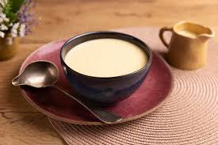
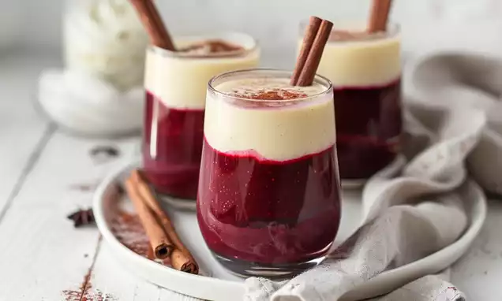

Como fazer Molho Branco Inglês

Ingredientes
- 500 ml de leite integral.
- 4 gemas (passadas pela peneira para tirar o cheiro de ovo).
- ½ xícara de açúcar.
- 1 fava de baunilha ou 1 colher de sopa de extrato de baunilha de verdade (fuja da essência artificial).
- Opcional: 100 ml de creme de leite fresco para mais cremosidade.
Modo de Preparo:
- Aqueça o leite com a baunilha em fogo baixo até quase ferver (surgirem bolinhas nas bordas).
- Enquanto isso, bata as gemas com o açúcar até formar um creme claro.
- Temperagem (Crucial): Despeje um pouco do leite quente na tigela das gemas, mexendo sem parar. Isso evita que as gemas cozinhem e virem omelete.
- Volte tudo para a panela em fogo baixíssimo. Mexa com uma espátula fazendo o desenho de um "8" até o creme engrossar levemente.
- Ponto de Napole: O creme está pronto quando você passa o dedo nas costas da colher e fica um caminho limpo que não escorre.
- Gele imediatamente: Transfira para um pote, cubra com plástico filme encostado no creme (para não criar nata) e leve à geladeira.
Juntando tudo isso e um pouco de estética você tem isso:

Se você quiser ver a tabela de tempo e a tabela nutriocional Clique Aqui
Para voltar para a receita do sagu Clique aqui